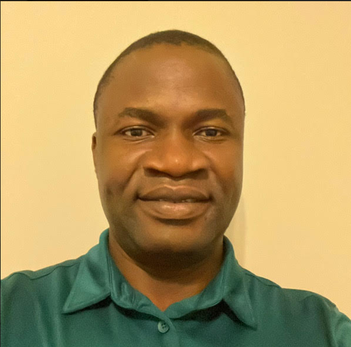
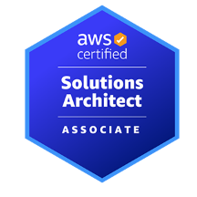
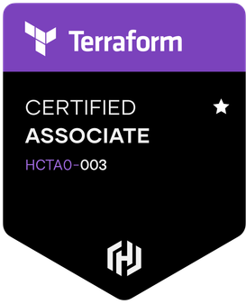

Alaba Yusuf

Summary
As a skilled Web Developer with a strong background in both Front-End and Back-end Web servers and in DevOps, in additiona to over 7 years of experience in Electrical Engineering, I bring a unique blend of technical expertise and strategic vision to deliver innovative solutions to a reputable organization. My in-depth understanding of both domains allows me to design and implement cutting-edge solutions that optimize performance and efficiency. I am dedicated to driving seamless integration between technology and business objectives, ensuring successful outcomes for diverse projects.
Education
- Masters of Science, Elecrical Engineering - Gannon University, Erie PA (2013-2015)
- Bachelor of Science, Electrical Engineering - University of Alabama at Birmingham, AL (2009-2012)
Work Experience
- Cloud Engineer/DevOps Engineer - Raytheon Technologies, Tucson AZ
May 2019 - Present
- Proficiently implemented CI/CD pipelines leveraging cutting-edge tools such as Jenkins for Continuous Integration, GitLab to facilitate continuous integration, sonarqube to perform thorough code analysis, docker for efficient containerization, Nexus Repository for reliable artifact storage, ansible for streamlined continuous deployment (CD), and employed monitoring solutions including Splunk Forwarder, Prometheus and Grafana.
- Skillfully tailored Jenkins agents and plugins to accomodate diverse build and deployment scenarios, encompassing multi-branch pipelines, parameterized builds, and parallelized testing.
- Seamlessly integrated Jenkins with Git version control systems, automating build triggers and deployments based on code changes to enhance development efficiency.
- Successfully instituted Jenins monitoring and logging solutions, enabling comprehensive performance tracking and effective troubleshooting of pipeline-related issues.
- Collaborated closely with development teams to identify areas for automation, leveraging technologies such as Ansible for streamlined configuration management and application deployments.
- Proficiently utilize Maven as a robust build automation tool, managing dependencies, compiling source code, and packaging applications into deployable artifacts.
- Demostrated adeptness in Python to develop AWS Lambda functions, facilitating serverless logic and event-driven workflows that seamlessly interact with various AWS services.
- Designed and configured highly available and scalable EC2 instances, Virtual Private Clouds (VPCs), subnets, and security groups, establishing a solid foundation to support application deployments.
- Crafted and implemented cliud orchestration solutions utilizing infrastructure as code (IaC) tools like AWS CloudFormation and Terraform, enabling efficient provisioning and management of resources.
- Devised and implemented optimized DynamoDB tables, ensuring data consistency and scalability for NoSQL database workloads.
- Efficiently orchestrated containerized workloads using ECS (Elastic Container Service) and EKS (Elastic Kubernetes Service), optimizing resource utilization and enabing seamless scalibility.
- Expertly set up Route53 for streamlined DNS management, encompassing domain registration, routing policies, and health checks, therby ensuring dependable and high-performing application access.
- Automate the deployment, management, and maintenance of company's infrastructures on AWS and on-site systems using different IaC tools such as Ansible, Terraform, CloudFormations, Kubernetes, Docker, etc.
- Advance Lead Product Engineer - General Electric, Fort Worth TX
May 2017 - April 2019
- Effectively communicate design engineering changes to manufacturing, ensuring seamless integration of new product features into the assembly process.
- Performed design verification and verification activities to ensure that electrical systems meet safety, quality, and regulatory standards using PTC Creo.
- Provided expert technical support to Assemblers and Technicians during product assembly nd testing.
- Collaboarted with mechanical designers to integrate electrical designs into 3D product models, ensuring that components fit within the physical constraints of the product.
- Served as a bridge between engineering and manufacturing teams, facilitating collabiration and feedback on product improvements.
- Coordinated with Quality, Test, Engineering, and Manufacturing teams to address and resolve quality issues, ensuring the delivery of high-quality products to customers.
- Optimized product assembly processes, streamlining production and reducing inefficiencies through effective communication and collaboration.
- Implemented continuous improvement initiatives, driving cross-functional teams to enhance product quality and efficiency.
- Demonstrated strong problem-solving skills, effectively analyzing technical challenges and proposing innovative solutions for product enhancement.
- Conducted root cause analysis for manufacturing and assembly issues, identifying and addressing underlying problems to prevent recurring defects.
- Fostered a culture of teamwork and knowledge sharing, encouraging effective communication amoung teams to maximize productivity and quality.
- Collaborated with cross-functional teams to develop and implement standardized work processes, ensuring consistency and eficiency in manufacturing and assembly activities.
- Test Development Engineer - General Electric, Fort Worth TX
May 2012 - April 2017
- Demonstrated expertise in providing technical support for electronics test and repair processes of assemblies used in vehicle control products, ensuring optimal performance and reliability.
- Exhibited strong leadership skills by directing and implementing test projects that align with short and long-term business objectives, while promptly resolving issues to meet project timelines.
- Efficiently monitored and managed technical resources to support troubleshooting, maintenance, assembly, and debugging of new and existing test equipment.
- Proficiently documented, updated, and implemented manual/automated functional test programming, fixtures, and repair processes, enhancing the efficiency and accuracy of testing procedures.
- Acted as a key resource in assisting and guiding local and global test leaders and technicians in assessing, troubleshooting, and repairing medium to complex electronic assemblies.
- Showcased analytical prosess in identifying and driving resolutions to product issues through in-depth analysis of internal and external failures.
Skills
- Terraform
- Ansible
- Docker
- Kubernetes
- Git, GitHub
- Jenkins
- Linux - Centos, Ubuntu, Amazon Linux, etc.
- Python
- Bash script
- Go Lang
- etc.
Certifications
- AWS Solution Architect Associate - 
- Hashicorp Certified: Terraform Associate - 
Other